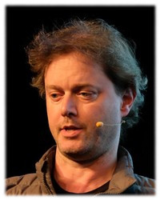
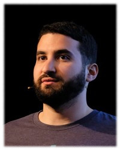

Easier container security with entitlements
During KubeCon + CloudNativeCon Europe 2018, Justin Cormack and Nassim Eddequiouaq presented a proposal to simplify the setting of security parameters for containerized applications. Containers depend on a large set of intricate security primitives that can have weird interactions. Because they are so hard to use, people often just turn the whole thing off. The goal of the proposal is to make those controls easier to understand and use; it is partly inspired by mobile apps on iOS and Android platforms, an idea that trickled back into Microsoft and Apple desktops. The time seems ripe to improve the field of container security, which is in desperate need of simpler controls.
The problem with container security
Cormack first stated that container security is too complicated. His slides stated bluntly that "unusable security is not security" and he pleaded for simpler container security mechanisms with clear guarantees for users.
"Container security" is a catchphrase that actually includes all sorts
of measures, some of which we have previously covered. Cormack
presented an overview of those mechanisms, including capabilities, seccomp,
AppArmor,

He gave the example of capabilities; there are about forty possible values that can be provided for the --cap-drop option, each with its own meaning. He described some capabilities as "understandable", but said that others end up in overly broad boxes. The kernel's data structure limits the system to a maximum of 64 capabilities, so a bunch of functionality was lumped together into CAP_SYS_ADMIN, he said.
Cormack also talked about namespaces and seccomp. While there are fewer namespaces than capabilities, he said that "it's very unclear for a general user what their security properties are". For example, "some combinations of capabilities and namespaces will let you escape from a container, and other ones don't". He also described seccomp as a "long JSON file" as that's the way Kubernetes configures it. Even though he said those files could "usefully be even more complicated" and said that the files are "very difficult to write".
Cormack stopped his enumeration there, but the same applies to the other mechanisms. He said that while developers could sit down and write those policies for their application by hand, it's a real mess and makes their heads explode. So instead developers run their containers in --privileged mode. It works, but it disables all the nice security mechanisms that the container abstraction provides. This is why "containers do not contain", as Dan Walsh famously quipped.
Introducing entitlements
There must be a better way. Eddequiouaq proposed this simple idea: "provide something humans can actually understand without diving into code or possibly even without reading documentation". The solution proposed by the Docker security team is "entitlements": the ability for users to choose simple permissions on the command line. Eddequiouaq said that application users and developers alike don't need to understand the low-level security mechanisms or how they interact within the kernel; "people don't care about that, they want to make sure their app is secure."
Entitlements divide resources into meaningful domains like "network",
"security", or "host resources" (like devices). Behind the scenes,
Docker translates those into whatever security mechanisms are
available. This implies that the actual mechanism deployed will vary

Eddequiouaq said the complexity of implementing those mechanisms is the responsibility of platform developers. Image developers can ship entitlement lists along with container images created with a regular docker build, and sign the whole bundle with docker trust. Because entitlements do not specify explicit low-level mechanisms, the resulting image is portable to different runtimes without change. Such portability helps Kubernetes on non-Linux platforms do its job.
Entitlements shift the responsibility for configuring sandboxing environments to image developers, but also empowers them to deliver security mechanisms directly to end users. Developers are the ones with the best knowledge about what their applications should or should not be doing. Image end-users, in turn, benefit from verifiable security properties delivered by the bundles and the expertise of image developers when they docker pull and run those images.
Eddequiouaq gave a demo of the community's nemesis: Docker inside Docker (DinD). He picked that use case because it requires a lot of privileges, which usually means using the dreaded --privileged flag. With the entitlements patch, he was able to run DinD with network.admin, security.admin, and host.devices.admin, which looks like --privileged, but actually means some protections are still in place. According to Eddequiouaq, "everything works and we didn't have to disable all the seccomp and AppArmor profiles". He also gave a demo of how to build an image and demonstrated how docker inspect shows the entitlements bundled inside the image. With such an image, docker run starts a DinD image without any special flags. That requires a way to trust the content publisher because suddenly images can elevate their own privileges without the caller specifying anything on the Docker command line.
Goals and future
The specification aims to provide the best user experience possible, so that people actually start using the security mechanisms provided by the platforms instead of opting out of security configurations when they get a "permission denied" error. Eddequiouaq said that Docker eventually wants to "ditch the --privileged flag because it is really a bad habit". Instead, applications should run with the least privileges they need. He said that "this is not the case; currently, everyone works with defaults that work with 95% of the applications out there." Those Docker defaults, he said, provide a "way too big attack surface".
Eddequiouaq opened the door for developers to define custom entitlements because "it's hard to come up with a set that will cover all needs". One way the team thought of dealing with that uncertainty is to have versions of the specification but it is unclear how that would work in practice. Would the version be in the entitlement labels (e.g. network-v1.admin), or out of band?
Another feature proposed is the control of API access and service-to-service communication in the security profile. This is something that's actually available on phones, where an app can only talk with a specific set of services. But that is also relevant to containers in Kubernetes clusters as administrators often need to restrict network access with more granularity than the "open/filter/close" options. An example of such policy could allow the "web" container to talk with the "database" container, although it might be difficult to specify such high-level policies in practice.
While entitlements are now implemented in Docker as a proof of concept, Kubernetes has the same usability issues as Docker so the ultimate goal is to get entitlements working in Kubernetes runtimes directly. Indeed, its PodSecurityPolicy maps (almost) one-to-one with the Docker security flags. But as we have previously reported, another challenge in Kubernetes security is that the security models of Kubernetes and Docker are not exactly identical.
Eddequiouaq said that entitlements could help share best security policies for a pod in Kubernetes. He proposed that such configuration would happen through the SecurityContext object. Another way would be an admission controller that would avoid conflicts between the entitlements in the image and existing SecurityContext profiles already configured in the cluster. There are two possible approaches in that case: the rules from the entitlements could expand the existing configuration or restrict it where the existing configuration becomes a default. The problem here is that the pod's SecurityContext already provides a widely deployed way to configure security mechanisms, even if it's not portable or easy to share, so the proposal shouldn't break existing configurations. There is work in progress in Docker to allow inheriting entitlements within a Dockerfile. Eddequiouaq proposed that Kubernetes should implement a simple mechanism to inherit entitlements from images in the admission controller.
The Docker security team wants to create a "widely adopted standard" supported by Docker swarm, Kubernetes, or any container scheduler. But it's still unclear how deep into the Kubernetes stack entitlements belong. In the team's current implementation, Docker translates entitlements into the security mechanisms right before calling its runtime (containerd), but it might be possible to push the entitlements concept straight into the runtime itself, as it knows best how the platform operates.
Some readers might also notice fundamental similarities between this and other mechanisms such as OpenBSD's pledge(), which made me wonder if entitlements belong in user space in the first place. Cormack observed that seccomp was such a "pain to work with to do complicated policies". He said that having eBPF seccomp filters would make it easier to deal with conflicts between policies and also mentioned the work done on the Checmate and Landlock security modules as interesting avenues to explore. It seems that none of those kernel mechanisms are ready for prime time, at least not to the point that Docker can use them in production. Eddequiouaq said that the proposal was open to changes and discussion so this is all work in progress at this stage. The next steps are to make a proposal to the Kubernetes community before working on an actual implementation outside of Docker.
I have found the core idea of protecting users from all the complicated stuff in container security interesting. It is a recurring theme in container security; we've previously discussed proposals to add container identifiers in the kernel directly for example. Everyone knows security is sensitive and important in Kubernetes, yet doing it correctly is hard. This is a recipe for disaster, which has struck in high profile cases recently. Hopefully having such easier and cleaner mechanisms will help users, developers, and administrators alike.
A YouTube video and slides [PDF] of the talk are available.
[Thanks to the Linux Foundation, LWN's travel sponsor, for supporting my
travel to the event.]
| Index entries for this article | |
|---|---|
| Security | Containers |
| GuestArticles | Beaupré, Antoine |
| Conference | KubeCon EU/2018 |
Posted May 24, 2018 23:12 UTC (Thu)
by simcop2387 (subscriber, #101710)
[Link] (3 responses)
You can get a high level overview of it from https://metacpan.org/pod/App::EvalServerAdvanced::Seccomp
It ends up setting up several namespaces (PID, SHM, mount, etc.), drops all capabilities, and then sets up seccomp as a whitelist for allowed syscalls. There's still more I could do to with apparmor or selinux but they haven't seemed necessary for my particular use.
Posted May 25, 2018 12:50 UTC (Fri)
by zyga (subscriber, #81533)
[Link] (2 responses)
Posted May 25, 2018 20:31 UTC (Fri)
by simcop2387 (subscriber, #101710)
[Link] (1 responses)
I hadn't thought to look at what snapd and such were doing, since they've got a similar use-case (though maybe not in the complete discarding of all data/records of execution).
Posted May 26, 2018 6:50 UTC (Sat)
by zyga (subscriber, #81533)
[Link]
Posted May 25, 2018 6:51 UTC (Fri)
by bof (subscriber, #110741)
[Link] (1 responses)
1) systemd unit security config in general
At least all the kernel stuff is valid for any of the use cases. WIBNI a highlevel "standard highlevel approach" would cover them all, too?
Posted May 25, 2018 12:53 UTC (Fri)
by zyga (subscriber, #81533)
[Link]
What is generic are some of the libraries (libapparmor, libcap, libseccomp) and certainly the corresponding kernel features.
Posted May 25, 2018 16:55 UTC (Fri)
by droundy (guest, #4559)
[Link]
Posted May 31, 2018 9:25 UTC (Thu)
by abufrejoval (guest, #100159)
[Link]
It's one of the reasons I have always preferred running Docker containers inside OpenVZ containers, because I really want to separate the two conflicting angles: The developer specifying what he needs via Docker and the operator specifying what he's willing to give via OpenVZ.
Security and resources should be negotiated, especially since they may be dynamic and de-coupled in terms of life-cycle. And of course they should also be understandable, but that's unlikely to become easier going forward, because differentiation of security and resources can only get worse (more complex) in these days of special function units, storage and fabric classes.
Entitlements or 'credits' also make sense when it comes to resources: You give workloads credits to spend on resources such as CPU, accellerators, network, storage or memory which they can then choose to spend according to the value of what they are computing and the current cost of those resources, which are sure to become ever more dynamic as well in these days of Lambda and clouds.
In both cases nesting allows a top-down budget or entitlement approach which is as detailed as it needs to be and as abstract as it can be for the current nesting level, instead of trying to nail everything at one flat layer, where it's complexity overwhelms both the developer and the operator.
Easier container security with entitlements
Easier container security with entitlements
Easier container security with entitlements
Easier container security with entitlements
Easier container security with entitlements
2) flatpack / snap isolation of desktop apps
Easier container security with entitlements
Easier container security with entitlements
Nesting (was: Easier container security with entitlements)